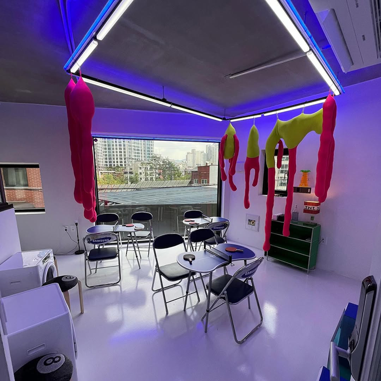
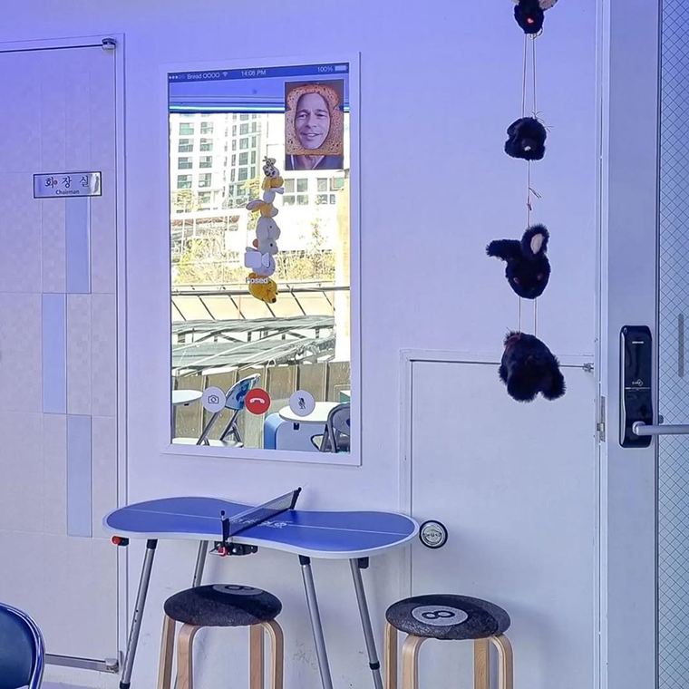
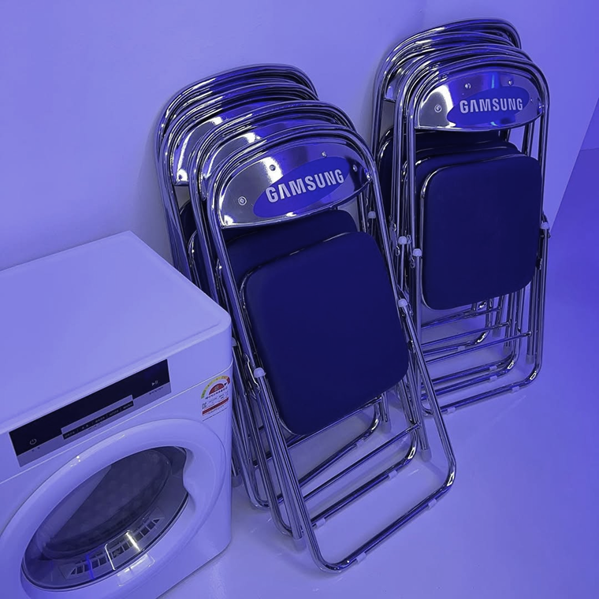
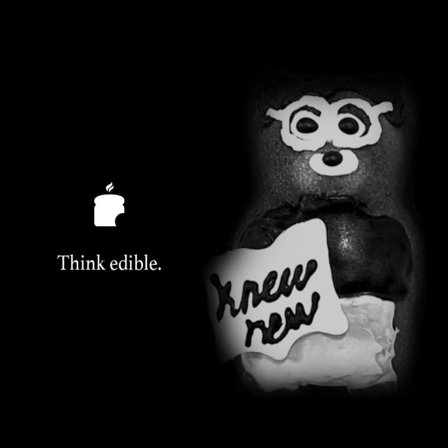
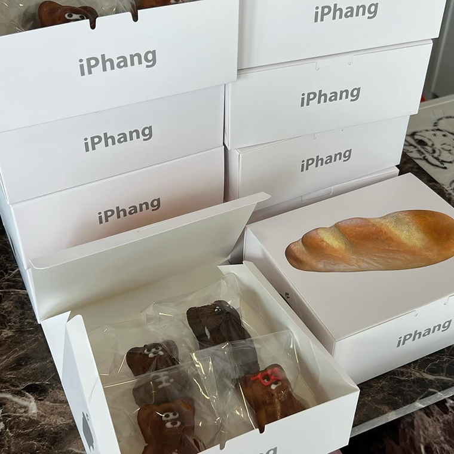
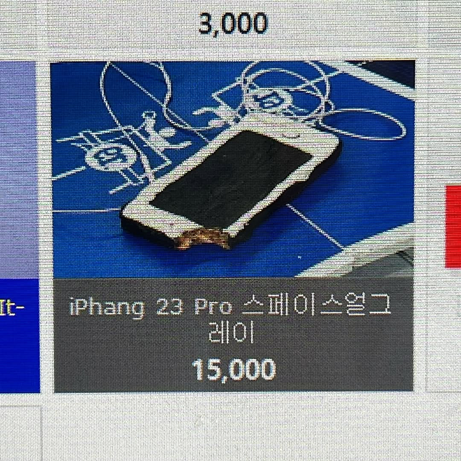
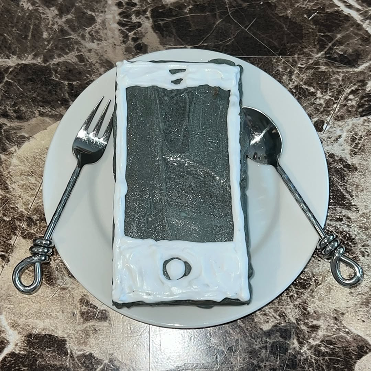

Just a few minutes from Hyochang Park Station, this place doesn’t announce itself loudly. You could walk past it without noticing, which is partly the point. It feels less like a café trying to attract attention, and more like something you happen to discover.
Inside, the space plays with internet culture in a way that feels very Korean—subtle, ironic, and slightly absurd. Familiar online references show up as textures, objects, and even things you can eat. It’s not trying to explain itself, and that’s what makes it interesting.
  I usually don’t come here just for coffee. I come to look around to see if there are any update of interior or menu and quietly enjoy the idea behind the place. It’s the kind of spot that makes more sense once you’re there. Everything is edible internet.
 One of their signature desserts is the iPhang, a playful parody of the iPhone. It even comes in packaging designed to resemble an iPhone box. They also released limited-edition cakes that looked like actual iPhones, but those are now sold out.
 Bread o.o.o.o
Address | Seoul Yongsan-gu
Opening Hours
9:00 - 18:00 (Mon-Fri)
9:00 - 16:00 (Weekend)
Instagram | @bread.oooo
About Curator
Jiyoung Kim
A local blogger based in Seoul, writing about places I’ve discovered over the years.
Around here

Bar
Chuoekgongan
A personal collection, curated like a museum
2km from Iteawon

Bar
Zoosindang
Where the space feels absolutely like a shrine
3km from Iteawon

Park
Hyochang park
Where the space feels just like a 404 page
4km from Iteawon
Stay Exploring
Join our free newsletter for curated Seoul finds.